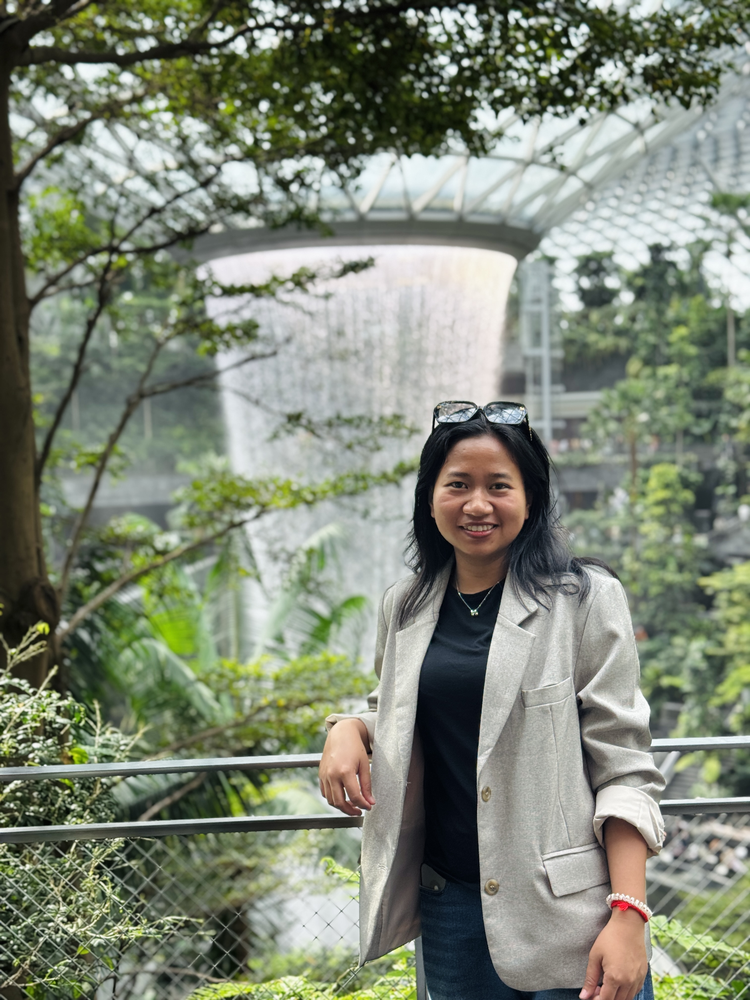

End-to-End Scene Text Spotting
Developing systems that jointly localize and recognize text appearing in unconstrained natural scenes.
COMPUTER VISION · DOCUMENT AI · OCR
I am a Ph.D. candidate in Computer Science at La Rochelle Université, L3i Laboratory, France. My research focuses on scene text detection and recognition, end-to-end text spotting, document image analysis, and low-resource writing systems, with particular emphasis on Khmer script.

Detection, recognition & spotting
Khmer & cross-lingual research
Visual text understanding
Vision & Transformer models
I am a Ph.D. candidate in Computer Science at La Rochelle Université, working within the L3i Laboratory in France.
My doctoral research investigates end-to-end scene text spotting for Khmer script as a representative low-resource and complex writing system.
My work spans dataset development, scene text detection, text recognition, end-to-end text spotting, and cross-lingual generalization. I am particularly interested in understanding how computer vision models can better support languages and writing systems for which annotated resources remain limited.
My research connects computer vision, language understanding, and document analysis.
Developing systems that jointly localize and recognize text appearing in unconstrained natural scenes.
Investigating recognition techniques for Khmer and other complex writing systems.
Building datasets, benchmarks, and learning strategies for languages with limited annotated data.
Applying computer vision and deep learning to extract and understand textual information from documents.
Datasets and methods developed during my doctoral research.
A Khmer scene-text dataset designed to support research on text detection and recognition in natural environments.
Learn moreA large-scale scene-text dataset for studying Khmer text under diverse real-world conditions and evaluating cross-dataset generalization.
Learn moreAn end-to-end scene text spotting approach designed for Khmer and other low-resource complex writing systems.
Learn moreSelected peer-reviewed research on Khmer scene text understanding.
Research on Khmer scene text detection and recognition in challenging real-world environments.
Exploring cross-lingual learning and generalization for low-resource writing systems.
A dataset and benchmark for Khmer text detection and recognition in natural scenes.
TEACHING & SUPERVISION
Alongside my research, I have experience teaching and supervising Computer Science students at the Cambodia Academy of Digital Technology.
My teaching interests include computer vision, artificial intelligence, deep learning, programming, and related areas of Computer Science.